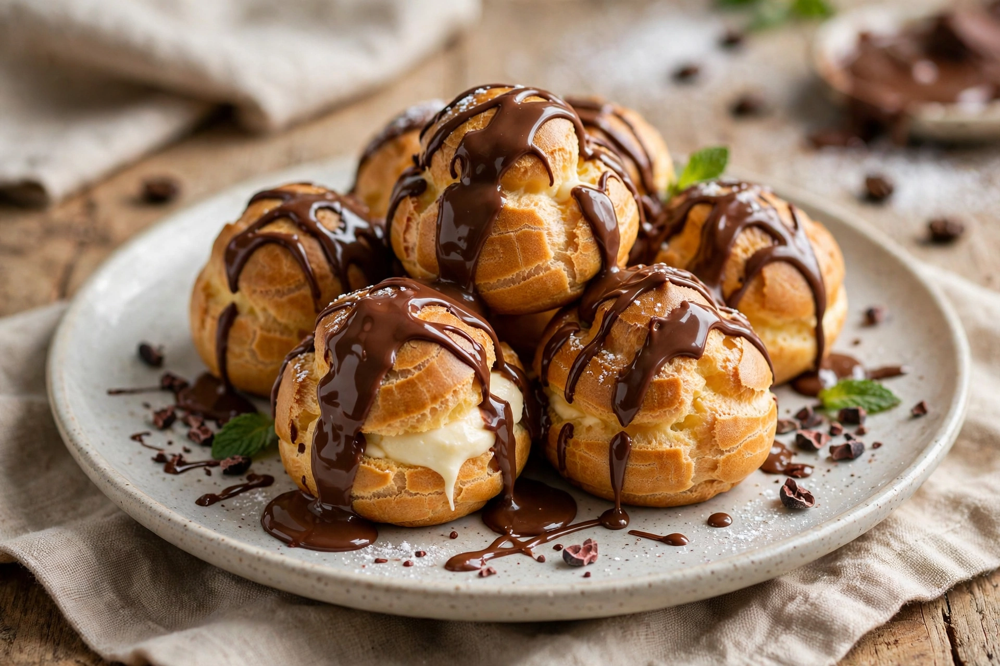

| Profiterole | |
|---|---|
| Alternative names | Cream puff (US); chou à la crème (France) |
| Type | Pastry |
| Place of origin | France |
| Main ingredients | Choux pastry; whipped cream or pastry cream; chocolate sauce |
A profiterole, also known as a cream puff in the United States or chou à la crème in France, is a filled French choux pastry ball with a typically sweet and moist filling of whipped cream, custard, pastry cream, or ice cream. The puffs may be decorated or left plain or garnished with chocolate sauce, caramel, or a dusting of powdered sugar.

Choux pastry dough — made from butter, water, flour and eggs — is piped into small balls and baked until hollow and crisp. Once cooled, the puffs are filled by injection or by splitting them and spooning in the filling. Profiteroles are commonly served as a pyramid bound with caramel threads (part of the French wedding cake croquembouche), or as individual desserts with warm chocolate sauce poured over.
Choux pastry is traditionally traced to the 16th-century Italian cooks of Catherine de' Medici. The profiterole in something like its modern form developed in 19th-century France; Antonin Carême is credited with perfecting the pastry and its presentation. The word profiterole originally meant a small gain or gratuity, and was applied to small rolls before coming to denote the filled pastry.